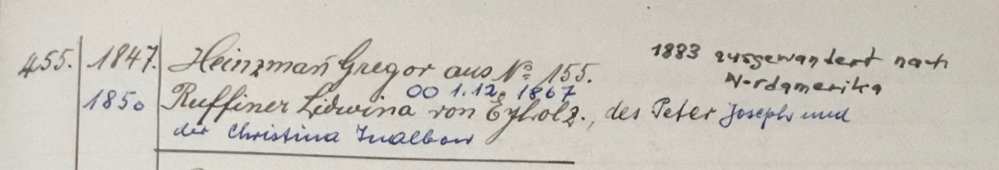
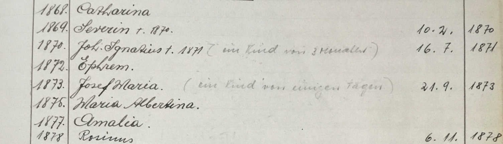
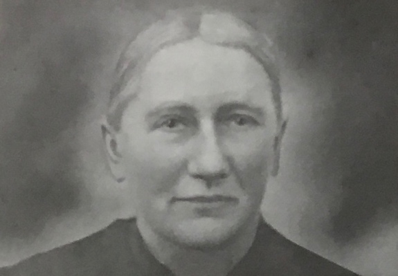
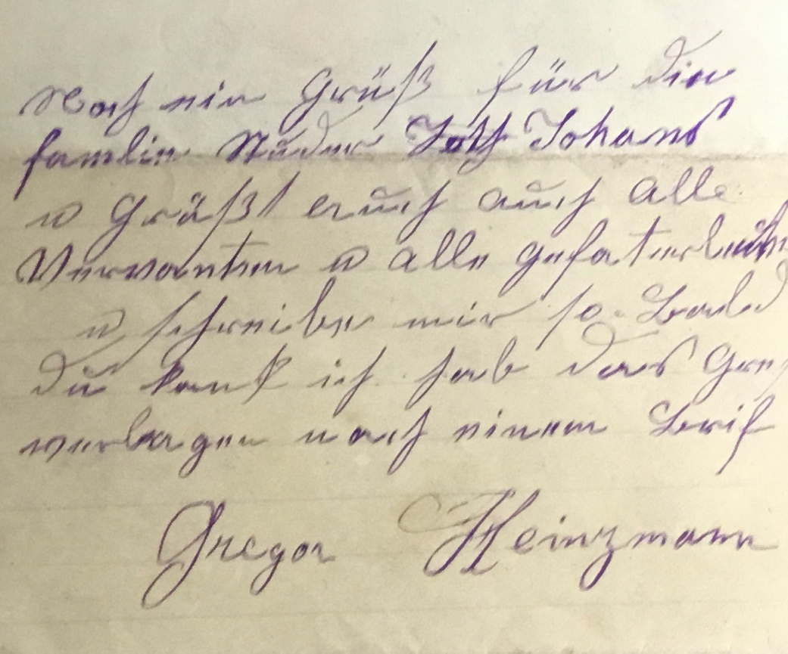
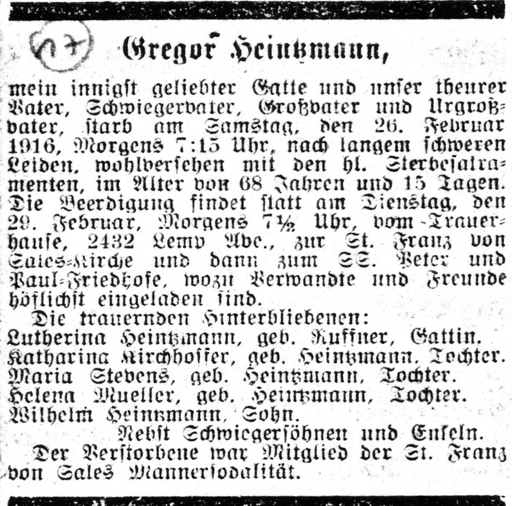
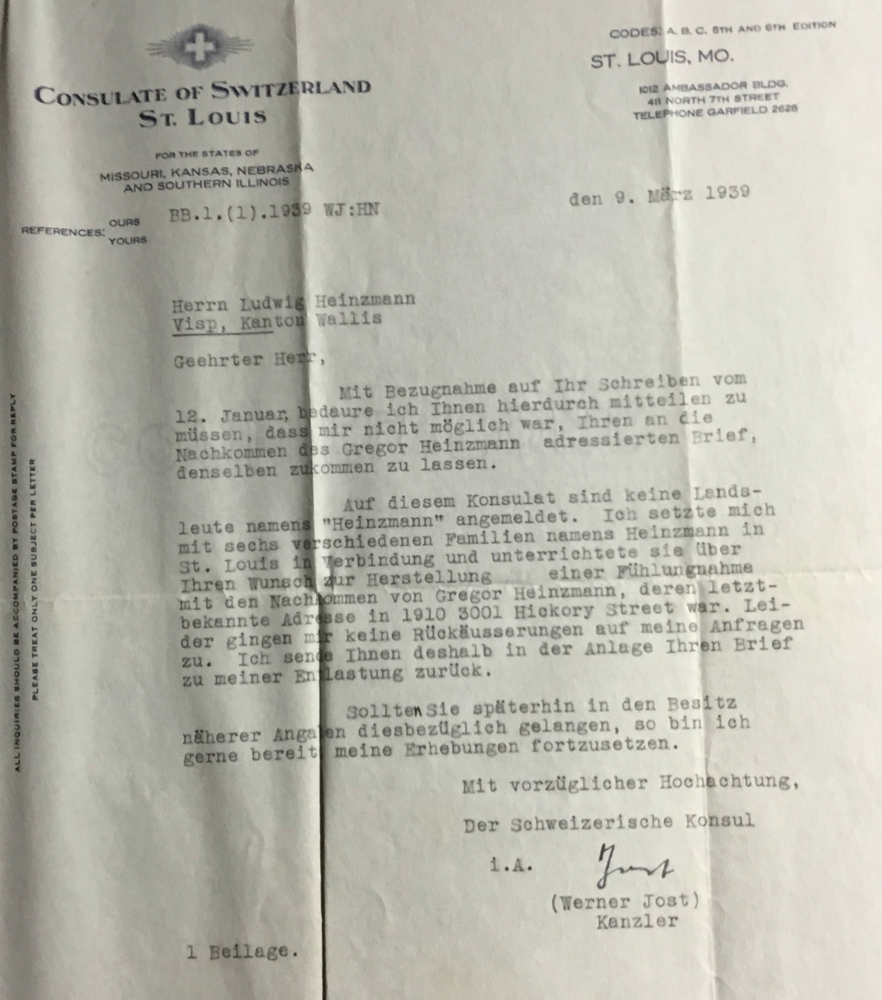
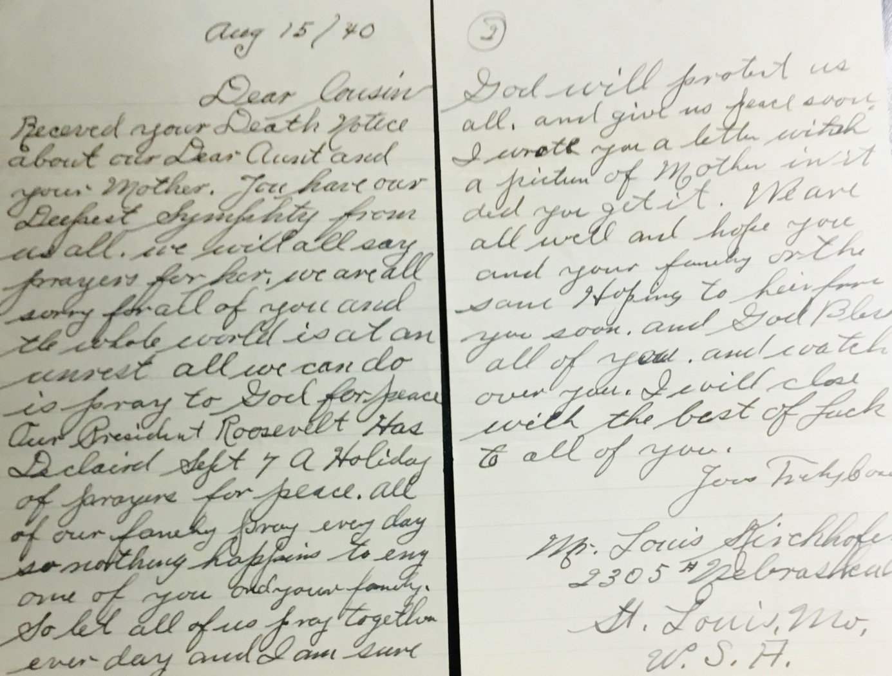

«... ich hab das Greste verlangen nach einem Brif»
Zur Geschichte der Auswandererfamilie Heinzmann aus Visperterminen
Einführung:
In der 2. Hälfte des 19. Jahrhunderts sind aus Visperterminen etwa 180 Personen ausgewandert. In einem ersten Schub waren es etwas mehr als 60. (Gründe dafür sind im Text «Einführung» zu Beginn der Auswanderer-Geschichten nachzulesen.) Sie emigrierten nach Santa Fe in Argentinien, wo sie das Dorf San Jerónimo Norte mitbegründeten. In den frühen 1880ern kam es zur Massenauswanderung, verliessen doch innerhalb eines Jahres mehr als 100 Einwohner den Ort. Diesmal waren die USA das Emigrationsziel. Hauptzielorte waren St. Vincent und Morrilton in Arkansas. Viele zogen weiter, die Familie Heinzmann1 zum Beispiel nach St. Louis in Missouri, nachdem sie zuvor, vermutlich auf der Suche nach geeigneten Arbeitsmöglichkeiten, bereits mehr als einmal den Wohnort gewechselt hatten.
Bericht im «Walliser Boten» vom 22. September 1883
Auswanderung. Am 20. September sind 96 und am 19. September 26 Personen nach Nordamerika (Arkansas) verreist, von denen gegen 70 Personen allein von Visperterminen gebürtig sind. Im Laufe eines Jahres sind aus der genannten Gemeinde über 100 Personen, d. h. nahezu 1/6 der ganzen Bevölkerung nach Nordamerika ausgewandert. Das Auswanderungsfieber wurde unter den Leuten von Visperterminen durch Büchlein geweckt, welche ihnen Walliser Agenten zuschickten und in denen Arkansas als ein wahres Paradies geschildert wird. Ohne weiter zu untersuchen, inwiefern die in den fraglichen Büchern enthaltenen Schilderungen auf Wahrheit beruhen, wollen wir für heut nur bemerken, dass man durch Ausstreuung von Büchlein über Amerika, die evident nur in der Absicht geschrieben wurden, um die Leute zur Auswanderung zu verlocken, unserm Vaterlande eine sehr zweideutigen Dienst erweist. Tausende von Franken und zahlreiche Arbeitskräfte werden auf diese Weise dem Lande entzogen. Wir geben zu, dass auch der materielle Notstand unserer Bevölkerung eine Ursache zur Massenauswanderung bildet; allein in sehr vielen Fällen sind hierin die Anwerbungen der Agenten nicht schuldlos. In Visperterminen z. B. sind Familien ausgewandet, welche 12'000 bis 17'000 Fr. an Grundgütern besassen und die in ziemlichem Wohlstande lebten oder wenigstens leben konnten.
Wie kinderreich war die Familie Heinzmann?
Die Heinzmanns gehörten 1883 zur zweiten Gruppe der Arkansas-Auswanderer. Ihre Geschichte lässt sich nur fragmentarisch nachzeichnen; sie erscheint aber exemplarisch für eine – zumindest für die erste Generation – wenig erfolgreiche Emigration. Über die Herkunftsfamilien des Ehepaars und deren existenzielle Situation ist wenig bekannt. Gregor Heinzmann (GH) wurde 1847 geboren. Wie viele Geschwister er hatte, erfährt man aus keinem der erhaltenen 14 Briefe. Es gibt lediglich Hinweise darauf, dass mehrere von ihnen auswanderten, eine Schwester anscheinend nach Argentinien. (Weil er den Kontakt zu ihr verloren hatte, fragte er den Bruder in einem Brief nach ihrem Verbleib und ihrer Adresse in Südamerika.) Informationen über die Identität der Ehefrau Ludwina (auch Lutherina oder Lidwina geschrieben) liefert der Eintrag zur Eheschliessung:

Heinzmann selbst nennt seine Ehefrau bloss wenige Male, meist im Kontext von Hinweisen über die Gesundheit der Familienmitglieder. Tatsächlich war sie drei Jahre jünger als er. Sie stammte aus der Gemeinde Eyholz. Ihre Herkunft ist nicht unerheblich, konnte sie doch kein ererbtes Gut in die Ehe einbringen. Ein solches hätte mit dem ihres Mannes zur Existenzgrundlage der Familie werden können. Mit Land ausserhalb von Visperterminen war das nicht möglich. (Bei der Realteilung erhielt jedes Kind seinen Anteil; entsprechend klein waren die geerbten Landparzellen.)
Gesichert ist, dass das Ehepaar Ludwina und Gregor Heinzmann-Ruffiner 1883 mit den vier Kindern Katharina, Maria, Emalina und Josef auswanderte. Zwischen 1868, dem Geburtsjahr von Katharina, und 1878 gebar Ludwina jedoch acht Kinder, fast jedes Jahr eines. Daran wird sich höchstwahrscheinlich auch in den fünf bis zur Auswanderung verbleibenden Jahre kaum etwas geändert haben. Im Pfarreibuch fehlen allerdings die Geburten nach 1878. Von den eingetragenen acht Kindern lebten vier Knaben nur ein paar Tage oder wenige Monate:

Wie oft Gregors Frau bis zum Auswanderungsjahr noch niederkam, ist nicht bekannt. Ebenso, was es mit Amalia auf sich hat. GH nennt neben Katharina die Töchter Maria, Emalina und den Sohn Josef. Womöglich war Emalina die in der Liste genannte Amalia. Man nahm es in der Familie mit der Schreibung der Namen nicht so genau, was sich auch an den drei Schreibweisen des Vornamens von Gregors Ehefrau zeigt. Wenn Emalina jedoch nach 1878 geboren wurde, wäre Amalia vor 1883 verstorben.
Frau Heinzmann gebar in Visperterminen und später in den USA weitere neun Kinder. Das erfährt man nicht aus GHs Briefen, sondern erst 1940 aus dem Schreiben eines Enkels bzw. von Katharinas Sohn Louis an die Verwandten in Visp. (Ich komme darauf zurück.) Er schreibt, seine Grossmutter Ludwina habe 17 Kinder zur Welt gebracht; fast alle seien früh verstorben. Wilhelm sei ihr einziger Sohn gewesen. (Tatsächlich war Wilhelm nicht der einzige Sohn, sondern der einzige Sohn, der zu diesem Zeitpunkt noch lebte.) Angenommen, sie hätte im Wallis elf Kinder geboren, dann wären in Amerika noch weitere sechs dazugekommen. Das letztgeborene war 1891 Oskar. Sein Vater schrieb 1908, sein «jüngster enigstgeliebter [!] Sohn Oskar 17 Jahr und 8 Tag alt», sei «vom zeitlichen ins ewige Leben» abberufen worden. Zwischen 1883 und 1891 war Ludwina Heinzmann demnach mindestens sechsmal schwanger. Dass nur wenigen ihrer Kinder ein längeres Leben beschieden war, beweist die Todesanzeige für Gregor Heinzmann Jahrzehnte später. Aufgeführt sind nur die vier Nachkommen Katharina, Maria, Helena und Wilhelm. Dass der Name Emalina fehlt, bedeutet, dass auch sie vor ihrem Vater starb. Sie war verheiratet und selbst Mutter (vermutlich mehrerer Kinder).
Warum werden in den Briefen die regelmässigen Geburten und Todesfälle nicht genannt? 1884 schreibt GH über den Tod seiner Mutter – sie war mit ihm und seiner Familie ausgewandert –, ein Jahr danach über den Tod des 12-jährigen Sohnes Josef und 22 Jahre später über das Lebensende von Oskar. Dass abgesehen davon in den Briefen weder über die Geburten noch über die weiteren Todesfälle berichtet wird, lässt sich mutmasslich damit erklären, dass diese Kinder jeweils so früh verstarben, dass sie noch keine Geschichte hatten. Dass nach 1887 jeweils Jahre vergingen bis zum nächsten Brief an den Bruder, dürfte ebenfalls eine Erklärung sein.
Das genannte Dossier – ohne die Briefe von Louis Kirchhofer – enthält wie erwähnt 14 Briefe, geschrieben zwischen 1882 und 1921. Sie handeln von Zukunftsplänen, von Hoffnungen und Enttäuschungen ebenso wie von Heimatverlust und schwindendem Mut. Adressat ist immer der Bruder in Visperterminen. (Seinen Vornamen erfährt man nie; GH gebrauchte meist die Anrede «Lieber Bruder», einmal auch «Mein geliebter Bruder».) Allerdings schrieb er nicht nur ihm, sondern auch weiteren Verwandten und Bekannten, ebenso an Walliser Ämter. Soweit bekannt, sind diese Texte nicht erhalten geblieben. – Zehn Briefe schrieb er selbst, zweimal zeichnete Ignatz Zimmermann in seinem Auftrag als Verfasser, einmal R. Furer im Auftrag von Ludwina Heinzmann. (Mehr dazu später.) Zimmermann redete den Adressaten mit «Vielgeliebter Freund» resp. «Lieber Freund» an, kannte ihn wahrscheinlich persönlich, während Furer die förmliche Anrede «Geehrter Herr Heintzmann» wählte. Einen weiteren Brief – an den «geliebten Schwager» – schrieb Katharina, die älteste Tochter. Die Ich-Aussagen hier (im letzten Brief, 1921) sind die von Ludwina. Dass sie den Text geschrieben hat, ist jedoch wenig wahrscheinlich, begründete Furer doch acht Jahre zuvor den Schreibauftrag so:
Rebbau als Zukunftsprojekt
Zurück in die Anfangszeit in Arkansas. Die Datenlage ist wie festgestellt dürftig. Dass sich Heinzmann im schriftlichen Ausdruck schwertat, kann nicht als Erklärung dienen. An seiner Schreibkompetenz ist nicht zu zweifeln, auch wenn der Sinn mancher Textpassagen nicht leicht zu verstehen ist. Auffällig ist die prächtige Handschrift; sie erleichtert das Lesen ungemein. Wenn das Verstehen dennoch manchmal schwierig ist, liegt es meist entweder am eigentümlichen Satzbau oder am fehlenden Kontext. Das führte möglicherweise schon beim damaligen Empfänger zu Unklarheiten oder Missverständnissen. Die oftmals abenteuerliche Orthografie dagegen ist für die Beurteilung der Sprachkompetenz unerheblich. Dass GH fast nichts über die Lebensumstände in den Vereinigten Staaten schrieb, sondern hauptsächlich persönliche Bedürfnisse sowie Vermögens- und Erbschaftsangelegenheiten thematisierte, bleibt eigenartig. Besonders darum, weil es sein ausgesprochener Wunsch war, «einander gegenseitig das Dasein» zu schildern. Warum gleichwohl mehr als einmal Bekannte in seinem Auftrag nach Visperterminen schrieben, werde ich an entsprechender Stelle erklären.
Transkription:
Lieber Bruder
Ein schreiben mus ich an dich richten, bei vor Neü Jar ankam / Nun das alte Jahr ist bald vorüber, u das Neüe Jahr begint. Wir danken Gott zu diesser Frist, wohl (…)
Zweifellos musste GH den Lebensunterhalt der Familie als einfacher Arbeiter verdienen. Scham dürfte mit ein Grund gewesen sein, warum er sich nie über die Erwerbstätigkeit äusserte. In den ersten Briefen gab er sich allerdings zuversichtlich bzw. zweckoptimistisch, in naher Zukunft mit Rebbau eine Existenzgrundlage zu haben. (Nebst Landwirtschaft war Weinbau der wichtigste Erwerbszweig der Terbiner. Auch Heinzmann verfügte über entsprechendes Fachwissen.) Er bat den Bruder, ihm doch «die Reben» zu schicken, sobald es möglich sei. Er muss schon in einem früheren (nicht mehr vorhandenem) Schreiben den gleichen Wunsch geäussert haben. Offenbar erfolglos. Da der Bruder auch diesmal nicht reagierte, wiederholte er drei Monate später die Bitte:
Daher schicke mir alle die sachen die ich dir geschrieben habe besonders Reben aller art Heiden Reben [Heida] u. auch Roten Ressling u auch Gewees Reben / wen du kanst so schicke mir Malfisier u. Lafnetscha u. Welschroth Reben, […]2
Er erklärt auch, wie er sie verpacken müssse: Der Bruder solle Kisten machen «von zarten Leden» [Brettern], «zur Seite henhaben von Seil» [Handgriffe aus Seil], «mit nasen Mies daringelegt» [sie sollen zum Transport in nasses Moos gelegt werden].
Den Wunsch nach Rebenstecklingen äussert er in allen Briefen bis 1885.3 Danach nicht mehr. Beim letzten dieser Bittgesuche fügt er hinzu, dass es ihm (finanziell) nicht gut gehe, da er nach Amerika «wenig mitgebracht» habe, er hoffe jedoch «auf bessere Zeiten»:
Besonders gute hoffnung kann man hier auf den Wein haben / den der Wein gedeit hier gut und komt sehr stark / nun aber muss man den Rebstock wenigstens bis ins triele [dritte?] Jahr abwartten / bis man den Nutzen dafon hat.
Ergänzend ist festzuhalten, dass GH auch gemäss eigener Aussage in Arkansas über keinen Landbesitz verfügte. Im Unterschied zu anderen Auswanderern fehlten ihm dafür die finanziellen Mittel. Er schreibt zwar an einer Stelle, dass er in zwei bis drei Jahren von deutschen Siedlern Land zu erwerben gedenke. Seine Hoffnung auf erfolgreichen Weinbau scheint jedoch auf Wunschdenken beruht zu haben. Auch wenn er an einer Stelle versicherte, er werde dem Bruder alles bezahlen, ist wenig wahrscheinlich, dass dieser den Wünschen je nachkam. Auch der erhoffte 12-pfündige «fete Kese» und die Flasche Schnaps dürften nie nach Arkansas verschickt worden sein.
Mehr Guthaben oder mehr Schulden?
Wer auswandert, muss auch seine finanziellen Angelegenheiten in Ordnung bringen, z.B. Schulden bezahlen oder als Gläubiger Guthaben einfordern. Sollte man meinen. Bei Heinzmanns jedoch blieb in dieser Hinsicht einiges unerledigt. Das führte schon bei der Abreise zu einem Zwischenfall, der das Ende der Reise hätte bedeuten können. Im Brief vom Februar 1884 berichtet er, der Gerichtsvollzieher Ignatz Mengis sei «ob Sitten» in den Zug mit der Auswanderer-Gruppe gestiegen und habe ihn vor die Entscheidung gestellt, entweder hier und jetzt die Geldforderung zu begleichen oder mit seiner Familie aus dem Zug zu steigen. Er verfügte nicht über die notwendige Barschaft (um welchen Betrag es ging, erfahren wir nicht), aber er hatte Glück: Christian Gottsponer und Alfred Zimmermann, zwei Leute aus der Auswanderer-Gruppe, bezahlten für ihn. Bevor er diese Episode erzählt, bringt er die Probleme zur Sprache, die der Bruder inzwischen seinetwegen hat. «Ich habe dein Schreiben erhalten und darin gelesen / was für Schwierigkeiten dir wegen meiner in den Weg treten». Er wolle ihm aber nun deutlich schreiben, wie «die Sache» stehe. In der Folge nennt er verschiedene Personen, die ihm etwas schuldig geblieben seien oder die Dinge hätten, die eigentlich ihm, Gregor, gehörten. Dem Franz Ambort etwa habe er keine «Farnisse» verkauft (gemeint sind hier Wohnungseinrichtungen). Das Streitobjekt, ein Tisch, könne der Bruder somit für sich beanspruchen. Weiter zählt er Leute auf, die ihm Geld schuldeten (etwa für zwei Ziegen und ein Schaf). Er nennt (für die damalige Zeit) durchaus beachtliche Beträge zwischen 10 und 41 Franken.4 Auch «eine kleine Erbschaft» erwähnt er: «33 Franken 60 C.». Diese solle der Bruder «einholen». Danach schwenkt er auf das Thema ein, das ihn schliesslich zur Episode mit dem Gerichtsvollzieher im Zug nach Sitten führt:
Die Eiholtzer haben an dem Schöniboden nichts mehr zu rangelen / das ist im Gericht von Vispbach [früherer Name von Visp] alles bezahlt / wenn die Eiholtzer noch einmal kommen für so etwas / so sage ihnen / sie sollten sich schämen / solches noch einmal zu fordern […]
Ebendiese Schuldforderung hätten Gottsponer und Zimmermann in der Eisenbahn für ihn beglichen. Dass die Eiholtzer das Geld bekommen hätten, könne er mit dem erhaltenen «Akt» belegen. Das «Gut» sei damit frei, und wenn sie es nicht glauben wollten, so sollten sie «mit dem Henckersohn [!] selbst sprechen».
Alfred und Clementina hatten drei Jahre vor der Emigration in Mund geheiratet. Mit ihnen reisten ausser dem Sohn Serafin auch Alfreds Eltern sowie zwei seiner Brüder. Frau Zimmermann brachte in Arkansas noch drei Knaben und vier Mädchen zur Welt.

Im Buch der Pfarreigeschichte von St. Vincent (1980 erschienen) findet sich das Bild von Maria Josephine Gottsponer-Heinzmann (1837 – 1917), der Ehefrau des oben genannten Christian Gottsponer (1833 – 1909). Julian Vomsattel, Vereinspräsident von z’Tärbinu aus Visp, ist im Besitz dieses Buches. (Auch die beiden Bilder zuvor sind dem Buch entnommen.)
Die Familie hatte elf Kinder. Im Buch erfährt man auch, dass die Immigranten im Oktober 1883 in St. Vincent (Arkansas) ankamen. (Maria Gottsponer, gebürtige Heinzmann war nicht verwandt mit Gregor Heinzmann.)
Mit «Gut» meinte und meint man auch im Wallis nicht nur ein Stück Land, sondern ein (oftmals) kleines landwirtschaftliches Anwesen, zu dem ein Haus und ein Stall gehören.5 Beispiele sind Berggüter, wo der Bauer sich allein oder mit der Familie während jeweils kurzer Zeit im Jahr aufhält, um das Vieh weiden zu lassen, das Heu einzubringen und es im Spätherbst zu verfüttern. Wenn GH nun schreibt, das Gut sei frei, kann das bedeuten, dass es schuldenfrei ist, also keine Pacht- oder anderweitige Zinsen zu entrichten sind. Aber wer war(en) im Schöniboden der oder die Besitzer? Vielleicht haben GH und seine Geschwister das Gut geerbt. Denkbar ist, dass Heinzmann auf seinen Landanteil eine Art privater Hypothek aufgenommen hatte, um zu Bargeld zu kommen, und dass er den Betrag den Gläubigern bis zu einem bestimmten Zeitpunkt hätte zurückzahlen sollen. Ist daraus nun abzuleiten, dass GH in Visperterminen noch über Grundeigentum verfügte? Davon ist, abgesehen von späteren Erbschaften, nirgends die Rede. Möglicherweise verkaufte er vor der Emigration dem Bruder seinen Erbteil (ohne jedoch den Schuldbetrag zu tilgen), und der Bruder sah sich nun mit einer Geldforderung konfrontiert. Dass der Betrag inzwischen zurückbezahlt war, wusste er anscheinend nicht.
Wie auch immer; man sieht, dass GHs Bruder in Visperterminen einigen Ärger hatte, weil Gregor vor der Abreise nach Arkansas seine finanziellen Angelegenheiten nicht in Ordnung gebracht hatte. Auch dass GH den Bruder anwies, für ihn bei Leuten Geld und Gegenstände (ein Tisch, eine Axt u.a.m.) einzufordern, muss für diesen ärgerlich gewesen sein. Es ist darum nicht weiter erstaunlich, dass sich GH häufig bemüht, den Bruder versöhnlich zu stimmen. Übers Ganze gesehen überrascht es schliesslich auch nicht, dass ihm aus dem Wallis weder Rebenstecklinge noch anderes nach Amerika geschickt wurden.
Wehklagen
Der 4. Brief vom 20. Februar 1886 kam aus Little Rock, wo die Familie Heinzmann inzwischen wohnte, bevor sie im Jahr darauf in St. Louis ihr Zuhause fand. Im Text dominiert ein Tonfall der Verzagtheit, wie es ihn in den Briefen zuvor nicht gibt. Hier der Textanfang:
Lieber Bruder!
Nun nehme ich meine Feder in die Hand, um dir noch einmal zu schreiben.
Nun möchte ich eine Bitte an dich richten, dass du so gut wärst und mir zur Hilfe stehtest, was immer du kannst, weil ich von meiner Tochter keine Hilfe mehr haben kann.
Wenn du mir hilfst, so ich will es dir gewiss niemals vergessen, denn ich will arbeiten, was meiner Kräfte zulassen. Und ich denke, dass ich noch soviel in der Schweiz noch kriege, dass ich es dir zurückgeben kann.
Denn ich kann es nicht aushalten, dass ich sehe, dass es mir so geht. Ach, mein lieber Bruder verlass mich doch nicht in Gottes Willen; ich wills dir niemals vergessen.
Bevor er in diesem Gestus fortfährt, übermittelt er Neujahrsbotschaften, insbesondere wünscht er der Familie des Bruders gute Gesundheit «an Gliedern, an Leib und Seele […] Gottes Segen» soll über das Haus des Bruders und dessen Familie herrschen, auf viele Generationen hinaus. (Das Unterwürfige in seiner Haltung ist nicht zu überhören.) Dem folgt im scharfen Kontrast die Botschaft über die eigene Befindlichkeit, apostrophiert als Einsamkeit und Enttäuschung. Die nächsten Einwanderer lebten zu weit weg, um mit ihnen Kontakt zu pflegen. Dazu die Klage, vom Bruder auf keinen seiner fünf Briefe Antwort bekommen zu haben. Es ist nicht auszuschliessen, dass dieser bis zu dem Zeitpunkt nur das eine (erwähnte) Mal nach Arkansas geschrieben hat. Das würde auch belegen, dass GH keine Rebenstecklinge bekam und seine Bitten, für ihn bei Walliser Schuldnern Geld einzutreiben und nach Arkansas zu schicken, vermutlich unerfüllt blieben.
Der Verzweiflung (oder Larmoyanz?) gibt GH danach in Gedichtversen Ausdruck:
In der Heimat möchte ich sein
Strahlte mir doch einst golden
Dort der liebe Sonnen Schein
In der Heimat wohnt die Liebe
Ach so bange ach so bange
klagt das Herz hier in der Brust
Süsse Heimath.
Warum ist es’ das Sehnen
Nach der Heimat trautem Herd
Das mit süsser stiller Schwermuth
Mir das arme Herz beschwerth
\[...\]
in der Heimat möcht’ ich sein,
strahlt mir doch noch eins so golden
dort der lieben Sonne Schein;
in der Heimat wohnt die Liebe,
in der Heimat weilt die Lust,
und so bange, ach so bange,
klopft das Herz mir in der Brust.
Süsse Heimat!
\[...\]
Das Original (rechts die erste Strophe) des deutschen Volkslieds stammt vom Dresdener Autor Karl Beils. Geschrieben 1828. Es besteht aus fünf neunzeiligen Strophen. Das Liedhafte kommt in zahlreichen refrainartigen Versen zum Ausdruck. Heinzmann führt sie nicht alle auf, referiert aber weitere Zeilen. Alle nahe am Original.
Dass jemand lange nach der Schulzeit eine grosse Zahl von Versen zu reproduzieren vermag, erstaunt keineswegs. In Visperterminen haben die Schulkinder vermutlich Beils' Gedicht auswendig gelernt, was umso einfacher war, als es wohl zum Liedkanon gehörte. (Ausserdem lässt sich rhythmische Sprache viel leichter im Gedächtnis behalten als Prosa. Das zeigt sich etwa an der mündlichen Tradierung antiker und mittelalterlicher Epen.) Bis heute gibt es besonders im Wallis Frauen und Männer im hohen Alter, die durch enorme Gedächtnisleitungen verblüffen, nicht zuletzt, wenn es darum geht, bestimmte Ereignisse zu datieren.
Die Gedichtzeilen verdeutlichen den Stand von Heinzmanns Spiegel des Selbstmitleids. Sie können von ihm auch bewusst gesetzt sein, um den Bruder empathisch zu stimmen bzw. dessen Hilfsbereitschaft zu stimulieren.
Bevor GH den Brief mit einer der gängigen Grussformeln abschliesst, folgt etwas, mit dem er die Hoffnungslosigkeit noch krasser zum Ausdruck bringt:
Und ich ende mit meinem traurigen Schreiben u. traurigen Leben in der weiten, ja weiten Ferne. Meine Tochter will sich verheiraten, u. das ist mir nicht recht. Und jetzt habe ich keinen anderen Menschen, der mir hilft oder mich nicht verachtet, ausser Felix Z[eiter]
Heimat und Ferne sind die Ausdrücke, mit deren Hilfe er sich artikuliert. Warum er zuvor geschrieben hat, von seiner Tochter bekomme er keine Hilfe mehr, wird nun klar. Aber die Äusserungen bleiben gleichwohl irritierend. Heinzmann lebt mit seiner Familie in Little Rock. Weswegen macht ihn die Heirat der Tochter Katharina derart mutlos? Und wie steht es um seine Beziehung zu Ludwina? Er behauptet, er werde in der Familie weder geliebt noch respektiert. Damit drückt er aus, man halte ihn für einen Versager. Er behauptet implizit, er werde sowohl von seiner Frau als auch von den beiden jüngeren Töchtern verachtet. Bemerkenswert ist in diesem Kontext ausserdem die Aussage, er wolle arbeiten, was seine Kräfte zuliessen. Hat er es bis jetzt in Arkansas an Arbeitseifer fehlen lassen, oder ging ihm die nötige Tatkraft ab, sich in der Arbeitswelt zu behaupten? Dem Bruder, der ihm offensichtlich mit Geld aus der Not helfen soll, versichert er, er sei sehr wohl leistungsbereit und werde ihm alles zurückzahlen, was er von ihm bekomme. Ausserdem habe er ja «in der Schweiz» noch Geld zugut.
Es bleiben unbeantwortete Fragen. Zum Beispiel, ob das Ganze inszeniert oder Ausdruck purer Mutlosigkeit ist. Heinzmann war zu diesem Zeitpunkt 38-jährig, eigentlich im sog. ‘besten Mannesalter’. Aber wenn er behauptet, er werde von fast allen verachtet, scheint es, als ob er jegliches Selbstwertgefühl verloren hätte. Zweieinhalb Jahre nach dem Wegzug aus dem Wallis erklärt er sich als gescheitert.
Hier sei zum Vergleich ein Auszug aus einem Bericht eingefügt, der um 1930 vom 54-jährigen Alexander Minnig zuhanden des Schweizer Konsulats verfasst wurde und bezüglich Entfremdung gewisse Parallelen zu Heinzmann aufweist. Der 1876 geborene Minnig aus Ried-Mörel wanderte 1910 mit seiner Frau Susanna und acht Kindern nach Kolumbien aus und siedelte im Bergland der Kordilleren. Im Bericht, den das Konsulat 1931 veröffentlichte, schreibt er unter anderem:
Bei zwanzigjähriger Praxis im Urwald und dem halbkultivierten Boden habe ich so viel durchgemacht […] Wiewohl ich heute ein mächtiges, über 1000 Hektaren umfassendes Landgut und fast hundert Stück Vieh besitze, so bin ich doch kein reicher Mann, noch weniger ein glücklicher, denn die Wunde meines Heimwehs wächst unaufhörlich; je mehr sich meine Familie (5 Söhne und 4 Töchter) an die neue Heimat anwachst, um so einsamer finde ich mich.6 […]
Ähnlich wie Heinzmann konstatiert Minnig das Fremdwerden zwischen ihm und den Kindern. Während sein (und seiner Frau?) Heimweh nach dem Wallis zunimmt, assimilieren sie sich und betrachten Kolumbien als neue Heimat. – Übrigens emigrierten 1914 auf Minnigs Empfehlung drei Familien aus Bitsch ebenfalls nach Kolumbien, zwei Brüder und ihr Schwager – alle mit Namen Schwery. Es wurde für sie zum Albtraum. Zwei der Familien kehrten 1928 nach unsäglichen Reisestrapazen in die Schweiz zurück. Minnig selbst musste die Besitzverhältnisse der Hacienda über staatliche Behörden legitimieren lassen, nachdem sich zahlreiche indigene Gruppen im gerodeten Gebiet angesiedelt hatten. Unmittelbar danach verkaufte er das Gelände und übersiedelte 1935 mit der Familie in die Stadt Cali.
Noch ein paar Sätze zur Geschichte der Familie Elisa und Eduard Schwery: Klaus Anderegg konnte 2008 mit der 94-jährigen Rosa Andenmatten-Schwery ein Interview führen (im Bild ist sie das Mädchen links neben der Mutter). Darin erzählt sie von den armseligen Verhältnissen in Kolumbien. Nach der Rückkehr in die Schweiz bekamen die Kinder zum ersten Mal Schuhe. Rosa erzählte auch von den Sprachproblemen; sie habe zwar alles verstanden, aber nicht sprechen können, da die Eltern sie in Kolumbien immer im Dialekt angesprochen, sie dagegen immer auf Spanisch geantwortet hätten. Zunächst arbeitete sie in Brig für monatlich 30 Franken als Tellerwäscherin. Später machte sie eine zweijährige Ausbildung als Saaltochter, worauf sie auf Lehr- und Wanderjahre in Hotels im In- und Ausland ging. «Ich war einfach gerne in der Fremde.» Und die Heimat? «Heimat ist, wo ich mich wohlfühle.»
Ein Kommentar im «Walliser Bote» vom 5. April 1884
Walliser in Arkansas. Es wurden uns mehrere Briefe von den in den letzten Jahren nach Arkansas ausgewanderten Wallisern mitgeteilt, aus denen wir ersehen, dass es nicht allen so schlecht ergeht, wie uns früher mitgeteilt wurde. Es ist wie überall, so auch in Amerika der Fall, dass derjenige, welcher fleissig arbeitet, und sich Mühe gibt, es zu einem ordentlichen Wohlstand bringen kann, wohingegen der Nachlässige und Faule verarmt und sich und seine Familie ins Unglück stürzt.
Zur Rechtfertigung des Herrn Auswanderungsagenten Riedmatten lassen wir hier Stellen aus zwei Briefen von nach Arkansas ausgewanderten Wallisern folgen. So schreibt Christian Jossen, gebürtigt [!] aus Brigerbad: «Nach unseren Erfahrungen hier im Staate Arkansas kann ich nichts Anderes sagen, als Arkansas ist ein mildes schöngelegenes Land. Für Viehzucht, Ackerbau und Baumzucht ist es gut geeignet, wenn es mit fleissiger Hand angebaut wird; denn jetzt ist es meistenteils, man möchte sagen Urwald. Wenn man daher die mühsame Zeit der Ankunft überschritten hat, kann man es zu einem guten Fortkommen bringen. Alles steht jedoch in der Hand Gottes und es kann einer im besten Land unglücklich werden und der andere in einem schlechten glücklich sein … Ich werde den Auswanderungsagenten nicht beschuldigen, dass ich hier bin, sondern ihm danken.»
Christian Gottsponer7, gebürtigt von Visperterminen, schreibt seinerseits: «Ich danke Euch (v. Riedmatten), dass ich in dieses Land gekommen bin; denn wenn schon nicht alles nach der Schnur geht, wird es doch allgemach besser kommen, wie ich es hoffe. Der gösste Übelstand ist, dass die Gemächer hier nichts taugen. Ich kann aber ein Haus bauen und Gemächer, weil hier schöne Steine und Bauholz auf der Farm sind. Auch mit der Farm wird es anders kommen, wenn wir gesund bleiben …»
Durch die Aufnahme dieser Zeilen wollen wir unsere Leser keineswegs irgendwie zur Auswanderung aufmuntern; denn wir sind gegen das Auswandern, weil es unsere feste Überzeugung ist, dass wenn man im Wallis arbeiten will, man hier sein Durchkommen ebensogut sich verschaffen kann, wie in jedem anderen Lande. Deshalb werden wir stets allen unseren Lesern zurufen: «Bleibt daheim, arbeitet und näht euch redlich!»
Euphorie und Sarkasmus
Im Jahr darauf (1887) schreibt GH dem Bruder erneut zwei Briefe. Anlass wird im April anscheinend eine von diesem angezeigte Erbangelegenheit. Inhaltlich bleibt der Sachverhalt unklar. Ob Heinzmann (oder seine Frau) etwas geerbt hat, bleibt offen. Klar wird einzig, dass er Dokumente ins Wallis schicken soll. Jedenfalls bittet er um «Stempelpapier u. Bögen» sowie um Angaben, was genau er tun müsse.
Auffallend ist der veränderte Tonfall. Nach dem Übersiedlung nach St. Louis, der rasch wachsenden Stadt am Mississippi8, ist die Hoffnungslosigkeit vom Jahr zuvor einer optimistischen Grundstimmung gewichen. So schreibt er etwa, ihre Wohnung liege zwischen zwei «Spaziergärten», wo oft Musik gespielt werde. Und sie befänden sich in der Nähe der Kirche; es gebe da viele «Kloster Schwestern». Positiv stimmt ihn überdies, dass sein Freund Felix Zeiter inzwischen ebenfalls in St. Louis wohnt. Die übrigen Schweizer dagegen befänden sich (mindestens) 400 Meilen entfernt. – Die wiedererlangte Zuversicht hängt vermutlich damit zusammen, dass es in St. Louis bessere Arbeitsmöglichkeiten gab.
Den zweiten Brief (am Jahresende) schreibt er mit roter Tinte. Schon kurz nach der Anrede drückt er seine freudige Grundstimmung aus. Als ob der Aufbruch in eine bessere Zukunft bevorstünde:
Hinweg mit allem Weh u. Ach / hinweg mit allem Leid, wir selbst sind die Zeit. Und machen wir uns froh und gut, ist froher Mut bei jedem neuen Leid. Und was einmal die Zeit gebracht / das nimmt sie wieder hin / drum haben wir bei Tag u Nacht auch immer frohen Sinn.
Das ist der pure Gegensatz zur Larmoyanz im vorletzten Brief! Der Umzug nach Missouri scheint ihn in einer Weise motiviert zu haben, dass er seine Stimmung mittels eines Kalenderspruchs ausdrückt. Dazu kommt, dass er die Familie sozial besser vernetzt sieht. Wenn er im April noch behauptet hat, ausser Felix Zeiter lebten die übrigen Schweizer weit entfernt, erzählt er nun von mehreren Geburtstagsfeiern von Bekannten. Johann Abgottspon etwa habe für sein Fest 40 Franken eingesetzt. Sie hätten von 8 Uhr abends an während 24 Stunden getanzt. Die «Spielleute» habe man mit 15 Franken entlöhnt. Auch die Geburtstagsfeier für seine Frau erwähnt er. Der Brief endet jedoch mit einer Rüge an den Bruder. Zuerst fragt GH, ob er die Fotografie bekommen habe, dann folgt der Tadel: «Wenn du mir nicht mehr schreibst / so kann ich nach diesem Brief auch aufhören / ist [es] aber der Fall / dass du kein Papier und Geld mehr hast für Frangierig [Frankatur] / so sende ich das Geld dafür.» Ist das sarkastisch gemeint? Die Haltungsänderung verblüfft, umso mehr, als die flehende Bitte um Geld im früheren Brief noch nachklingt. Oder ist es die Retourkutsche, nachdem der Bruder nicht geantwortet und ihm kein Geld geschickt hat? Heinzmann scheint in der Zwischenzeit an Selbstbewusstsein gewonnen zu haben. Aber die Angriffslust verdeckt vielleicht bloss die Entwertung, als die er das Schweigen des Bruders empfindet. Wie auch immer; in St. Louis muss sich die soziale Situation der Familie deutlich verbessert haben. Die offensiv-angriffige Kommunikation kommt jedenfalls einer Kehrtwendung gleich. Das zuvor flehentliche Bitten macht einer Haltung nahe der Häme Platz.
Tatsächlich schrieb GH dem Bruder von da an während 21 Jahren [!] nicht mehr. Jedenfalls findet sich im Dossier für diesen Zeitraum kein von ihm selbst geschriebener Brief. (Was sich auch damit erklären liesse, dass einige Briefe nicht mehr vorhanden sind. Auch die später genannten von Felix Zeiter sind nicht erhalten.) Zweimal schrieb Ignatz Zimmermann für ihn. Auf diese und weitere Briefe werde ich nun eingehen.
[…] ich hab das Greste verlangen nach einem Brif
Die frühere Mutmassung, GH habe mangelnder Sprachkompetenz wegen Briefe verfassen lassen, erweist sich als falsch. Zimmermanns erstes Schreiben vom Oktober 1888 zeigt, dass Heinzmanns letztem Brief der Abbruch der Kommunikation folgte, weil aus dem Wallis keine Antworten kamen. Acht Monate danach versucht er mit Hilfe des Mittelsmanns den Knoten zu lösen. Zimmermanns Brief fängt so an:
Ich muss dir ein paar Zeilen im auftrag von deinem Bruder schreiben. Er beklagt sich / das er 4 – 5 Briefen noch keine Antwort erhalten habe, es verdrisst ihn / das er von seinem Bruder vergessen sein soll, das er von Dir keine Zeilen mehr erhalten kan seit Jahren. Er sagt / wen [du] noch ein kleines Bruder Herz habest / so werdest doch diesses mal eine Antwort geben, sonst sagt er / wenn gerade so grosse Geld noth ist / sollen sie es schreiben / den köne er dir so vill schicken / das ihr wider zurück schreiben kenen. In voller Erwartung wartet er auf einen Brif.9
Die zentralen Botschaften im kurzen Text sind das Bedauern über das Verstummen des Bruders sowie die Mitteilung, es gehe der Familie Heinzmann gut, auch die Kinder könnten nun mitverdienen. Und sie hätten «alle Zeit gute Arbeit gehabt». Bruder, Schwägerin und die Kinder liessen Grüsse ausrichten. Am Ende bekräftigt GH das Geschriebene mit zwei eigenen Sätzen: Der Bruder solle doch bitte bald schreiben, er habe «das Greste [grösste] verlangen nach einem Brif». (Hier der handschriftliche Text.)

Weitere Inhalte gibt es nicht. Was auch als Beleg genommen werden kann, dass Heinzmanns Familie in St. Louis Tritt gefasst hat, der Schmerz über das Verstummen des Bruders den Emigranten jedoch umtreibt.
Dass der Briefwechsel kurz nach diesem Versuch wieder in Gang kam, ist wenig wahrscheinlich. Es gibt dafür keinerlei Belege. Aber um 1893 herum muss zumindest ein Brief aus dem Wallis in St. Louis angekommen sein. Das erfährt man aus dem nächsten Schreiben im Dossier, datiert vom Oktober 1895. Wiederum ist Zimmermann der Schreiber. Er tue es im Auftrag von Heinzmann, der «ein par mal durch den Felix Zeiter» dem Bruder habe schreiben lassen, aber «schon über zwei Jahre» ohne Antwort geblieben sei. (Einen gänzlichen Abbruch der Beziehung gab es folglich nicht, aber sie existierte anscheinend nur als Einwegkommunikation.) – Im Brief hier geht es um Erbschaften. Zimmermann schreibt, Heinzmann wolle wissen, «wie es mit der Erbschaften [!] von seiner Frau stehe, die doch gefallen sein sollen». An zwei Orten habe sie Land geerbt. Zimmermanns Formulierung könnte man so verstehen, dass die Heinzmanns über die Erbschaft nur vom Hörensagen wissen. Wahrscheinlich ist der Sachverhalt jedoch bloss so defensiv formuliert, um des Bruders Entgegenkommen nicht zu gefährden. (In der Regel wurde auch Ausgewanderte vom zuständigen Waisenamt über Erbangelegenheiten zuverlässig informiert.) Die für die Abwicklung notwendigen Mittel – Papier und Stempel – und für die Mühe solle der Bruder jedenfalls Rechnung stellen. So viel werde die Erbschaft wohl wert sein. Wenn man sich die im Wallis übliche Realteilung vor Augen hält sowie die tiefen Preise für Agrarland, macht die Schlussbemerkung durchaus Sinn.10 Um einen grösseren Betrag dürfte es sich nicht gehandelt haben.
Im gleichen Schreiben lässt auch Heinzmanns Schwiegersohn Kirchhoffer über eine Erbschaft seiner Frau nachfragen. Er möchte wissen, was aus der Wiese geworden sei, die «ihr der Onkel gedestament[et] hat»; niemand sage mehr etwas davon; sie wüssten nicht, ob sie verkauft worden sei, wer sie benutze «oder was sie Zins bringt». – Des Weiteren informiert Zimmermann über die gute Gesundheit der Familie Heinzmann und darüber, dass die drei Töchter verheiratet seien. Ihren Kindern und Männern gehe es ebenfalls gut. Bemerkenswert ist, was er über die sozialen Kontakte der Emigranten erzählt:
[W]ir sind hir alle sehr gute Freunde / dein Bruder wie seine Schwieger Söhne u. ihre Familie sind meine besten Freunde. Wir kommen oft zusammen u. unterhalten uns mit einem Glas Bier u. erindre [!] uns an Euch u. das Liebe Treue Heimat-Land. Wenn wir auch Vaterland u. Heimat-Land verlassen haben / so haben wir es nicht vergessen / das beweissen die Feierlichkeiten der Schweizer / die jedes Frü[h] u. Spet-Jahr feiren; auch dies Jahr wird in St. Louis der 17te Nowember / der Nazionaltag der Schweiz 11, ein Schweizer Fest gehalten / das[s] sich jede Nazion denken wird, die Schweiz / das Land der Freiheit, ist das Schenste Land.
Dass St. Louis damals eine aufstrebende Stadt war, zeigen auch die Schlussbemerkungen. Alle Terbiner seien im vergangenen Jahr aus Arkansas noch Missouri gekommen, so auch «Bernard Briggeler mit seiner Familie u. mein Bruder Anton». Mit ihrem Los seien sie alle zufrieden, «wir können uns für jedermann sehen lassen, u. noch sogar wen der Prisident von Visperterbinen här komt».
Aus Ignatz Zimmermanns Lebensweg sei hier noch eine im Wallis ein Jahrhundert lang gehütetes Geheimnis gelüftet. Julian Vomsattel bekam es 1990 während seines Aufenthalts in St. Vincent von einer Frau Schmitter-Zimmermann erzählt: Zimmermann war in St. Louis mit einer Frau Abgottspon verheiratet. Das war seine zweite Ehefrau. Die erste hiess Melania. Mit ihr und den Kindern fuhr er (wohl mit einer Auswanderer-Gruppe) nach Genua, gab dort aber vor, er habe für seine Frau keine Papiere erhalten; man könne also nicht auswandern. Seine Frau kehrte daraufhin mit den Kindern ins Wallis zurück. Ohne ihn! In der Folge wurde die Ehe aufgelöst, und Melania heiratete erneut. Auch Ignatz Zimmermann heiratete ein zweites Mal – und emigrierte mit der neuen Frau nun doch nach Übersee, wo er sich dauerhaft in St. Louis niederliess. Die Walliser Verwandten meinten, er sei «nie übers Wasser gefahren». Über seinen Verbleib wusste dort niemand Bescheid. Rätselhaft bleibt, warum man ihm trotz seiner beiden in Heinzmanns Auftrag geschriebenen Briefe nicht auf die Spur kam.
Zurück zur Familie Heinzmann: Ein knappes halbes Jahr später, am 4. März 1896, wird der Post in St. Louis ein weiterer Brief nach Visperterminen übergeben. Diesmal von der Tochter «Katharina Kirchhoffer geboreni Heinzman». Nach der Anrede «Lieber Onkel» kommt sie sogleich zum Thema:12
Wie [ich] am dritten Mertz eüere brief gelesen habe, da ich sehe / das sie lieber Onkel so erbitterlich zornich sind, somit will ich eüch bezeig [bezeugen?], das sie es nicht brauchen zu sein. Erstens brauch ich das Geld auch / den ich habe 4 Kinder und sonst haben wir auch nichts als was mein Mann verdint. Und zum zweiten kann ich nicht helfen / das sie die wiesse [Wiese] nicht gekauft haben.
Der Brief des Onkels wird unmittelbar nach dem Eintreffen beantwortet. Bereits im ersten Abschnitt wird klar, dass dem zornigen Schreiben ein Briefwechsel zwischen ihm und ihr vorausgegangen ist. Worum es geht, zeigen die nächsten Sätze. Der Onkel hat ihr anscheinend mitgeteilt, dass ihr vor einiger Zeit testamentarisch eine Wiese vererbt worden ist. (Wie aus Zimmermanns Brief ersichtlich, muss diese Information schon einige Zeit zurückliegen. Es dürfte mehr als eine Korrespondenz dazu gewechselt worden sein.) Katharinas Antworten waren vermutlich nicht so vorsichtig formuliert, wie der Brief von Ignatz Zimmermann im Oktober 1895.
Die Wiese ist in der Zwischenzeit ohne ihr Wissen vom Onkel sowie von Felix Zeiter (wie man sieht, gibt es in dieser Geschichte zwei Männer mit diesem Namen) genutzt worden. Die Nichte hat höchstwahrscheinlich reklamiert, weil sie keinen Pachtzins erhält. Zwar bedankt sie sich, dass der Onkel sie (seinerzeit) über die Erbschaft informiert hat, fragt aber trotz des Zorns von dessen Seite nochmals, seit wann ihr das Geld vorenthalten werde. Wiederum scheint eine verunglückte oder verspätete Kommunikation Ursache für den Zwist zu sein. Vom Vorwurf des Onkels, er habe ihr das Land ja abkaufen wollen, lässt sich Katharina nicht beeindrucken. Sie reagiert in ähnlicher Weise wie er:
In Amerika wird mann nicht so leicht böse, sonst Krigt man gleich eins auf das maul Geschlagen […] hauptsächlich ist es eüre eiggene schuld / warum haben sie mihr nicht geschrieben / das sie die Wisse Kauffen wolten und ein brei [Preis] da zu machen / was sie möchte[n] bezalen / den sie wüsten / das mann nicht müntlich miteinander sprechen kante, jetz sprechen sie das Urteil aus / welchem es sein schuld es ist / meine oder deine.
Indem sie erklärt, was Sache ist, zeigt sie sich als couragierte, schlagfertige Frau. Wenn ihr der Onkel die Wiese abkaufen wolle, hätte er es ihr mitteilen und ein Kaufangebot machen müssen. Das Missverständnis müsse er sich selbst zuschreiben.
Katharinas sprachliche Defizite sind nicht weiter erstaunlich. Sie lebte 1896 seit 14 Jahren im englisch-amerikanischen Sprachraum (was auch die Schreibweise ihres Familiennamens erklärt). Mehr als eine rudimentäre Schulbildung dürfte ihr im Wallis vor der Emigration nicht zuteilgeworden sein. (Sie war bei der Abreise 15-jährig.) – Aus ihrem Brief erfahren wir noch, den beiden Schwestern Marÿ und Emalina sei je ein Kind gestorben, Marÿ sei wieder schwanger, und Emalina habe kürzlich wieder ein Kind bekommen. Bevor sie zum Schluss kommt, fügt sie an, was es zurzeit in St. Louis an Schlagzeilen gibt:13
Und sonst sind schlechte Zeiten zum Arbeiten. Und auch sonst vergeht kein Tag in der Woche, wo nicht Selbstmord vorkommt und Leute einander erschiessen, totschlagen, vergiften usw. Kürzlich wurde ein Mann gehängt, wo beim ersten Mal das Seil riss. Dann liess man ihn zwei Stunden liegen, ging ein anderes Seil kaufen und hängte ihn ein zweites Mal auf. Jetzt ist er nach seinem Tod dem Scharfrichter ins Haus gekommen und hat zu ihm gesagt: Wehe dir, der du mich zu Unrecht abgeurteilt hast. Seit dieser Zeit ist der Scharfrichter schwer krank geworden.14
Warum diese grässlichen Botschaften? Während Heinzmanns und Zimmermanns Briefe aus der Stadt am Mississippi grossmehrheitlich Positives übermittelten – alle seien sie mit ihrem Los zufrieden, schrieb Zimmermann –, folgt kurz darauf diese Auflistung gewaltsam herbeigeführter Todesfälle. Das Geschilderte dürfte der Realität entsprochen haben, aber mit der Auswahl ging es Katharina Kirchhoffer wohl um die Schockwirkung. Gut denkbar, dass sie dem Onkel möglichst drastisch vor Augen führen wollte, in was für einem Umfeld sie lebten und dass es auch darum inakzeptabel war, ihnen Eigentum vorzuenthalten.
Nach den Grussbotschaften folgt die genaue Adresse: «Mrs Kaide Kirchhoffer / 2908.S. Salina St. / St Louis / North Amerika». (Auf ihre Geschichte komme ich später zurück.)
Die letzten Briefe von Gregor Heinzmann
Das Dossier enthält noch zwei Briefe von GH, beide aus dem Jahr 1908. (Seit Katharinas zorniger Antwort an den Onkel sind 12 Jahre vergangen.) Der März-Brief enthält zwei wichtige Botschaften. Die erste, dass er vom Bruder sowohl einen Brief als auch Geld erhalten habe, die zweite (früher bereits genannte), dass Oskar im Alter von 17 Jahren nach langem, schwerem Leiden gestorben sei. Für ihn, seine Frau und die Kinder sei es ein harter Schlag; trösten könne sie einzig die Überzeugung, dass es von Gott so gewollt sei.
Die Quittung für den Geldbetrag habe er schon ins Wallis geschickt. Wenn der Bruder bald antworte, schicke er ihm eine Pfothografi von Oskar. Die gedruckte Todesanzeige lege er dem Brief bei. Das Schreiben endet mit dem einmal mehr geäusserten Bedürfnis nach Kontakt. Es sei ja noch die einzige Freude, die sie «auf dieser Welt» haben könnten, «gegenseitig wen nicht mündlich doch schriftlich, sein Dasein schildern zu können».
Im kurzen Brief vom August geht es um eine Hinterlassenschaft. Offenbar um einen Geldbetrag, der GH nach St. Louis überwiesen werden soll. Schon vor zweieinhalb Monaten habe er deswegen ins Wallis geschrieben, aber bisher «kein Lebenszeichen» erhalten. Der Bruder solle ihm ein gestempeltes Dokument schicken, damit er es unterschreiben und die Unterschrift von zwei Zeugen bestätigen lassen könne. Vom Konsul habe er sich informieren lassen, dass so vorzugehen korrekt und zugleich «der einfachste und sicherste Weg» sei.
Er fragt noch, ob sie alle gesund seien, und fährt fort: «Hier in Amerika geht es wirklich schlecht. Derjenige der keine Arbeit hat, kann auch keine finden, und alles so theuer, man hat gerade zu thun für die Lebensmittel».15
Das war möglicherweise der letzte Brief des damals 60-Jährigen an seinen Bruder. Es ergaben sich wohl keine weiteren Gelegenheiten, ihm sein «Dasein schildern zu können».
Die drei Seiten des letzten Briefes von Gregor Heinzmann.
Ludwina wird aktiv
Fünf Jahre später, im Juli 1913, lässt seine Frau einen Bekannten, R. Furer, einen Brief an ihren Schwager in Visperterminen schreiben. Der Text im Wortlaut (es wurden einzig ein paar Schrägstriche eingesetzt):
St. Louis, 15. Juli 1913
Geehrter Herr Heintzmann
[Im Auftrag eurer Schwägerin Frau Ludwina Heintzmann greife ich zur Feder um euch ein par Zeilen zu schreiben. Was Euch wahrscheinlich unbekannt sein wird, hat euer Bruder Gregor das Unglück gehabt sein rechten Arm zu brechen u. zwar schon vorigen Winter einmal u. den letzten Winter nocheinmal u. zwar an denselben Platz, er war beide mal für par Wochen im Hospital / den er hatte kein Geld den Doktor zu bezahlen u. er hat seitdem auch nicht viel Kraft in dem Arm / so dass er nur ganz leichte Arbeiten thun u. solche Plätze sind sehr schwer zu bekomen. Er ist jetzt für die letzten 8 Monate ohne Arbeit u. die Kinder hat ein jedes für sich selbst zu thun, denn bevor wir etwas Essen können / heisst es Geld in die Hand u. zum Kaufladen gehen / u. wo solle es herkommen / wen man keine Arbeit hat und auch keine bekomen kann / u. mit alten Leuten geht es schlecht und will sie Niemand mehr / sie wollen alles junge kräftige Leut.
[Und nun komm ich mit der höflichen Bitte / sobald als möglich eurer Schwägerin das Geld zu zusenden, sie sagt, sie habe vernommen / dass Ihr das Geld in den Händen habt. Seid daher so gut u. schickt es sobald wie möglich, denn die Zeit ist da / wo man für den Winter sorgen muss. Zum Schluss die besten Grüsse von uns allen an Euch alle
R. Furer
Gegenwärtige Adresse:
Nr. 2865 Selina Strasse / St. Louis Mo.
Da eure Schwägerin dess schreiben unkundig / so bezeugt sie ihre unterschrift mit einem Kreuz[.]
Dass Ludwina Heinzmann sich erstmals selbst zu Wort meldet, überrascht einerseits, blieb sie doch in den 31 Jahren seit der Auswanderung nahezu unsichtbar. Einzig, dass sie gesund sei, hat ihr Mann in Briefen zwei- oder dreimal erwähnt. Und auch er war es, der wissen wollte, was mit den zwei von ihr geerbten Landparzellen sei. Andererseits ist ihr Mann gesundheitlich offenbar in einer Weise beeinträchtigt, dass ihr nichts übrigbleibt, als über einen Mittelsmann nun selbst aktiv zu werden. Anlass ist die prekäre soziale Lage: Der 65-jährige Gregor Heinzmann ist alters- und unfallbedingt arbeitslos (und wird es höchstwahrscheinlich bleiben); selbst Lebensmittel zu kaufen wird zum Problem. Die Misere begann spätestens beim ersten Unglücksfall eineinhalb Jahre zuvor. Dass kein Geld für den Arztbesuch vorhanden war, zeigt, dass die beiden keinerlei Ersparnisse hatten. (Anscheinend wurden Mittellose im Hospital ärztlich notversorgt.) Man muss davon ausgehen, dass sie nur mit Hilfe ihrer Nachkommen über die Runden kommen. Bei der anschliessenden Bitte um Geld geht es nicht um eine Spende, sondern um einen Geldbetrag, der ihr zusteht, bis jetzt jedoch vom Schwager zurückbehalten wird. Es dürfte wiederum eine Erbschaft betreffen. Wir erfahren auch, was es bedeutete, dass es damals hier wie dort weder eine Altersvorsorge noch überhaupt ein Sozialsystem gab. Wer keine Ersparnisse hatte und nicht innerhalb eines Familienverbundes versorgt wurde, war auf Mitleidsspenden angewiesen.
Drei Jahre später starb Gregor Heinzmann. Die Nachricht in der Lokalzeitung nennt ein dem Tod vorausgegangenes langes, schweres Leiden:

Besonders auffällig: Die Todesnachricht führt nur vier von der grossen Zahl von Kindern auf, die Ludwina Heinzmann geboren hat. Sie ist ein Beleg dafür, wie dramatisch die Kindersterblichkeit in der Familie war. – Am 9. März 1916 erschien die Information über seinen Tod auch in der „Amerikanischen Schweizer Zeitung»: «Gregor Heinzmann starb im Alter von 68 Jahren an einem Krebsleiden.» In der Folge brachen die familiären Kontakte mit den Verwandten im Wallis ab. Gleichwohl bleibt es eigenartig, dass der Schwager über den Tod seines Bruders erst fünf Jahre später informiert wird:
St. Louis den 24 Februar 1921
Gelibter Schwager
[Ich mus ein schrieben zu senden u. dich wissen lassen das dein Bruder Tot ist / es 4 Jahren [es waren 5 Jahre] ver[f]lossen / uns jetz bin ich alein / somit bin ich [ge]zwungen um mein Geld velgen [?] was ich noch zu krigen hab. Gelibter Schwager ich verweise guten Dank wen du es mir schichen dust und mit schreiben mit grus
Ludwina Heinzman / auch alle mei Kinder lassen euch Grüssen u. Kindes Kinder Adje / lebet wol
Adres[se] ist wie volgt
Keide Kerchoffer [!] / 2224 Ondena ave.
[Der Felix Zeiter möchte dich bitten für jenziner Wurzel [Wurzeln des Gelben Enzians] zu senden / er wird ein gute belonung bezalen / mit grus
Felix Zeiter
Adres
2434 Lemp ave / St. Louis Mo. / America
Acht Jahre zuvor hatte Frau Heinzmann, wie schon gezeigt, unter den von Furer verfassten Text statt der Unterschrift ein Kreuz gemacht. Dem Brief hier ist zu entnehmen, dass sie inzwischen in der Familie von Tochter Katharina (Keide) lebt. Und diese dürfte für ihre Mutter dem Schwager geschrieben haben. Im Vergleich zu ihrem Text von 1896 treten die sprachlichen Defizite noch deutlicher hervor. Was sich damit erklären lässt, dass sie wohl seit einem Vierteljahrhundert keinen deutschen Text mehr geschrieben hat. (Nicht ganz auszuschliessen ist, dass Felix Zeiter den Text geschrieben hat.)
Was in all der Zeit unverändert blieb: Der Schwager antwortete fast nie und blieb auch passiv, wenn es darum ging, dem Bruder, der Schwägerin oder der Nichte den Geldwert von Erbschaften zukommen zu lassen. Als ob er sie für etwas bestrafen wollte.
Kontakte zwischen Nachkommen
Mit dem Schreiben vom Februar 1921 endete der Briefverkehr zwischen den Auswanderern und dem Bruder bzw. Schwager. Es war während vier Jahrzehnten eine wenig erspriessliche Kommunikation gewesen. In der Beziehung dominierten Enttäuschungen über unerfüllte Wünsche und die langen Phasen des Verstummens. Bei Gregor fand es Ausdruck in den flehentlichen Bitten um Lebenszeichen aus der «Heimat».
Zwei Jahrzehnte später kam es, wie am Anfang der Geschichte angesprochen, zu einer Kontaktaufnahme zwischen den Nachkommen in Visp und St. Louis. Es existieren drei Briefe von Louis Kirchhofer, Katharinas Sohn, aus dem Jahr 1940. Sie sind an die Verwandten im Walliser Dorf «Fichback» [Vispbach] gerichtet und übermitteln hauptsächlich Informationen über Katharina Kirchhofer-Heinzmann, seine Mutter. Die inzwischen 70-Jährige, schreibt Kirchhofer, sei seit 29 Jahren Witwe. Sein Vater sei damals nach 20-jähriger Krankheit gestorben. Es gehe ihr trotz des Alters und dem, was sie durchgemacht habe, recht gut. Sie habe neun Kinder zur Welt gebracht, sieben Mädchen und zwei Buben.
Den Brief von 1896 schrieb sie als Mutter von vier Kindern, d.h. es folgten noch fünf weitere Geburten. Ihr Sohn schreibt, er und seine Geschwister seien alle verheiratet. Er selbst habe zwei Töchter und zwei Söhne. (Auffällig ist, wie die Geburtenziffer von Generation zu Generation abnahm: Die Grossmutter gebar siebzehn Kinder, die Mutter neun und seine Frau schliesslich noch vier.)
Kirchhofers Angaben gemäss erkrankte sein Vater schon fünf Jahre nach der Heirat. Anscheinend konnte er aber weiterhin einer Erwerbstätigkeit nachgehen; im Brief von 1896 heisst es, die Familie lebe einzig von seinem Verdienst. Die Krankheit hinderte ihn auch nicht daran, seine Frau noch während Jahren zu schwängern. Das erste Kind muss John gewesen sein. Louis schreibt, John sei vor sieben Jahren (1933) als 47-Jähriger gestorben. Nämlich bei einer Gasexplosion beim Bau seines Hauses. Er kam demnach 1886 als ihr erstes Kind zur Welt. Damals war Katharina 18-jährig.
Ungewöhnlich ist, wie es zur späten Kontaktaufnahme zwischen den Heinzmann-Nachkommen in St. Louis und Visp kam. Louis berichtet, als er einmal wegen einer Sache beim Schweizer Konsul vorgesprochen habe, sei ihm mitgeteilt worden, Walliser Verwandte hätten nach ihnen gesucht. Wie die konsularische Antwort auf die Anfrage aus dem Wallis beweist, blieb die Suche vorerst ergebnislos. Die Antwort war ein an «Ludwig Heinzmann Visp, Kanton Wallis» gerichtetes Schreiben, datiert vom 9. März 1939. Hier die Fotografie des Originals:

Dass kurz darauf der Enkel der früheren Auswanderer im Konsulat vorsprach und von der Anfrage erfuhr, war Zufall. Es resultierten die drei genannten Briefe. Im dritten und vermutlich letzten drückt Louis Kirchhofer hauptsächlich das Mitgefühl aus zum Tod von Ludwig Heinzmanns Mutter. Sie war die Ehefrau des oder eines Bruders von Gregor Heinzmann. Ob es sich um den Empfänger der oben referierten Heinzmann-Briefe handelte, ist nicht bekannt. Jedenfalls wurde die Frau sehr alt.
Kirchhofer spricht auch kurz das Kriegsgeschehen an. Man erkennt, dass der Zweite Weltkrieg für die amerikanische Bevölkerung zu diesem Zeitpunkt noch weit entfernt war. Er schreibt, die ganze Welt sei zurzeit in Unruhe, und man könne nichts anderes machen als beten. Präsident Roosevelt habe den 7. September zum Gebetstag für den Frieden erklärt.
Seine Grossmutter Ludwina erwähnt er in den Briefen nur kurz. Abgesehen von ihren 17 Schwangerschaften scheint ihre Geschichte für ihn nicht von Interesse zu sein. Dabei hat sie nach dem Tod des Ehemannes bei den Kirchhofers gelebt. Warum Ludwina Heinzmann-Ruffiner über die ganze Zeit hinweg kaum je genannt wird, geschweige denn, dass man etwas über ihr Leben erfährt, bleibt ein Rätsel. Den vorhandenen Texten lassen sich nicht mal ihre Lebensdaten entnehmen. Ob ihre Identität marginalisiert wurde weil sie «deß schreiben[s] unkundig" und fast andauernd schwanger war und darum ein Leben im Schatten führen musste?
Wie angedeutet, bleibt es auch offen, ob die Korrespondenz zwischen Louis Kirchhofer und den Walliser Verwandten nach den drei Briefen endete oder während des Krieges und über diesen hinaus fortgesetzt wurde. Dass über das Jahr 1940 hinweg keine weiteren Briefdokumente aus St. Louis vorhanden sind, spricht eher für das Erste. Was auch daran liegen kann, dass Louis Kirchhofer, wie die folgende Abbildung zeigt, englisch schrieb.

Fazit:
Auch die Familie Heinzmann wanderte in der Hoffnung auf «bessere Zeiten» aus. Sie hat sich für sie nicht oder höchstens während einer kurzen Zeitspanne erfüllt. Die Übersiedlung von Arkansas nach Missouri führte zwar zu einer gewissen Zuversicht, aber heimisch wurde zumindest Gregor Heinzmann in Übersee nicht. Wie sich seine Frau in der neuen Welt zurechtfand, wissen wir nicht, aber angesichts ihrer ständigen Schwangerschaften, der regelmässigen Kinder-Todesfälle sowie der finanziellen Misere ist schwer vorstellbar, dass sie in Amerika jemals glücklich wurde.
Während die Walliser Einwanderer, die Land kaufen und als Farmer ihre Erwerbstätigkeit selbst in die Hand nahmen (wie die schon genannten Christian Gottsponer und Alfred Zimmermann), standen Leute, die nichts nach Amerika mitbrachten, vor einer unsicheren Zukunft. Dieses Schicksal teilten die Heinzmanns mit jenen Landsleuten, die im letzten Viertel des 19. Jahrhunderts oder später nach Argentinien auswanderten und dort, weil die Konzessionen bereits alle verteilt oder verkauft waren, ein kümmerliches Leben als Pächter oder Landarbeiter führen mussten. In Arkansas gab es zwar in den 1880er-Jahren noch genügend ungenutzten fruchtbaren Boden, aber die Auswanderer bekamen im Unterschied zu den Siedlern im argentinischen Santa Fe 30 Jahre zuvor davon kein Land geschenkt. Dort hatte jede Familie 16 Hektar zu Eigentum übertragen bekommen.16 Wer in Arkansas Farmer werden wollte, musste den Boden kaufen.
Aus der vorliegenden Erzählung zu schliessen, die meisten Auswanderer hätten es in Arkansas auf keinen grünen Zweig gebracht, wäre trotzdem falsch. Belege dafür gibt es viele, u.a. zwei Briefe der Familie Ruffiner aus Eyholz.17 Sie ist wahrscheinlich 1883 mit der gleichen Gruppe wie die Hinzmanns ausgewandert. Neun Jahre später ist es Sohn Moritz, der den ersten Brief ins Wallis schreibt, an den Onkel. Den zweiten schreibt ein Vierteljahrhundert später sein Vater an «Dear Liber Bruder Oskar». Die Ruffiners sind wie die Familien Zimmermann und Gottsponer in St. Vincent als Farmer sesshaft geworden. In Moritz' Brief ist zwar auch von Heimweh und vom Ärger über die Schreibfaulheit der Walliser Verwandten die Rede, dominant ist aber die Erzählung von der erfolgreichen Existenz als Farmer, besonders von den guten Baumwoll- und Getreideernten. Dass die Bauern in Arkansas besser lebten als die im Wallis zeigt auch die Bemerkung, Alois Ambort sei kürzlich von einer Reise ins Wallis zurückgekehrt, und auch er, Moritz, plane in naher Zukunft in die Schweiz zu reisen. Genauso wenig wie Ambort habe er aber die Absicht, dort zu bleiben.
Der Brief übermittelt durchwegs positive Botschaften. Auch wenn vor einiger Zeit das Haus abgebrannt sei, gehe es ihnen gut. Jedenfalls sei das neue Farmhaus mit den vier Zimmern grösser und schöner geworden. Sein Vater bewirtschafte die Farm; er selbst helfe im Sommer bei der Ernte mit, gehe jedoch während der übrigen Zeit wie seine Schwester einer Arbeit nach. Monatlich verdiene er umgerechnet 80, seine Schwester als Köchin 60 Franken. – Gegen Schluss des Briefes schreibt Moritz, er und sein Bruder seien Musikanten, der Grossvater erfreue sich guter Gesundheit und er schicke auch Grüsse von Alfred Zimmermann.
Zentraler Inhalt des kurzen Briefes von 1917 ist eine erfolgreiche Geldüberweisung. Aber auch, wie gut es ihnen nach wie vor geht. Dies wird im Wunsch ausgedrückt, dass sie im Wallis hoffentlich ebenso glücklich seien wie sie.
Eine ähnlich explizite Glücksaussage gibt es in keinem der Heinzmann-Briefe. Etwas Zuversicht schöpfte GH anfänglich aus der Rebbau-Fantasie, später in St. Louis aus der grossen Zahl von Arbeitsplätzen. Aber die Vorstellung, dass es «alle Zeiten gute Arbeit» geben würde, war trügerisch. Im Übrigen war es auch ziemlich realitätsfern, was der «Walliser Bote» 1884 schrieb. Nämlich, man müsse bloss fleissig arbeiten und sich Mühe geben, um es «zu ordentlichem Wohlstand» zu bringen.
Für die Kinder und Enkelkinder des Ehepaars Heinzmann mochte letzteres zutreffen. Ihnen fiel es ohne Frage leichter, sich zu assimilieren. Auch weil sie keiner Heimat nachtrauerten, sondern die Vereinigten Staaten als ihr Zuhause empfanden. Familienintern mochten sie weiterhin den Walliser Dialekt der Eltern oder Grosseltern sprechen, aber sie waren zweifellos auch sprachlich in der neuen Welt angekommen. Dass Louis Kirchhofer 1940 Briefe in englischer Sprache nach Visp schrieb, beweist, dass er sich (zumindest schriftlich) nicht auf Deutsch verständigen konnte. Hier zeigt sich der grosse Unterschied zu den Argentinien-Emigranten. Diese gründeten mit San Jerónimo Norte ihr eigenes Dorf, wo während Jahrzehnten Walliserdeutsch gesprochen wurde. Sogar vier Generationen später gab es noch Leute, die sich im Dialekt ihrer Vorfahren verständigen konnten.18 In Arkansas oder Missouri dagegen brauchten die Einwanderer Englisch, wenn sie ausserhalb der Familie kommunizieren wollten. (Es nicht zu lernen war keine Option. Ludwina Heinzmann könnte diesbezüglich die Ausnahme gewesen sein.)
Für Gregor Heinzmann kam erschwerend hinzu, dass der briefliche Austausch mit seinem Bruder enttäuschend verlief. Dieser beantwortete den grössten Teil der erhaltenen Briefe nicht. Er schien wenig oder gar kein Interesse zu haben, ihm sein «Dasein zu schildern», wie es Gregor so sehr am Herzen lag. Die Gründe dürften vielfältig gewesen sein. Nach Gregors Abreise war er nicht nur konfrontiert mit dessen unerledigten Angelegenheiten, sondern bald auch mit Bittgesuchen und Hilferufen. Warum bei ihm auch nach Jahren und Jahrzehnten Wohlwollen und Empathie fehlten, bleibt dagegen eine Frage, auf die es keine Antwort gibt. Jedenfalls zeugen die meisten Briefe aus Arkansas und Missouri vom Schmerz über das Defizit an sozialen Beziehungen mit Menschen aus der zurückgelassenen «Heimat».
-
Ausserhalb der Zitate verwende ich die heutige Schreibweise des Nachnamens (wie sie damals schon vom Pfarrer gewählt wurde). Die Familie selbst schrieb «Heintzmann»; auch noch in der Todesanzeige im Jahr 1916. ↩︎
-
Dieser und der folgenden Textauszug werden originalgetreu wiedergegeben. (Die Schrägstriche dienen der besseren Lesbarkeit.) In der Folge werden Briefpassagen konventioneller Schreibweise angenähert. Zudem gebrauche ich das grammatische Präsens weiterhin jeweils dann, wenn es um konkrete Briefinhalte geht. ↩︎
-
Zwischen 1885 und 1886 zog die Familie nach Little Rock, in die Hauptstadt von Arkansas, ein Jahr danach nach St. Louis in Missouri, wo sie blieben. Damit war das Thema Rebbau ohnehin nicht mehr aktuell. ↩︎
-
Der heutige Wert lässt sich in etwa ermitteln, wenn man damalige Löhne zum Vergleich heranzieht. In einem Protokoll der Terbiner Urversammlung von 1859 heisst es: «In Rücksicht des Arbeitlohnes im Rebwerk wurde bestimmt, dass nebst der Suppen der Lohn per Tagesschicht für einen gewöhnlichen Arbeiter in 140 Centim bestehe». Dass die Löhne bis Ende des Jahrhunderts kaum stiegen, zeigen die Stundenlöhne, die um 1900 in der Mineraliengrube Binn bezahlt wurden: für Mineure 20, für Handlanger 18 Rappen. ↩︎
-
In der Innerschweiz ist der Ausdruck Berggut gebräuchlich. ↩︎
-
Bundesarchiv Bern – 2400 Bogota /2-Jahresbericht 1931 (von Klaus Anderegg in den 1980er-Jahren gesichtet). ↩︎
-
Christian Gottsponer war es, der damals im Zug nach Sitten einen Teil von Heinzmanns Schulden bezahlt hat. ↩︎
-
In der Stadt St. Louis in Missouri versechsfachte sich von 1850 bis 1900 Einwohnerzahl auf gegen 600'000. ↩︎
-
Zimmermanns Sprachkompetenz ist kaum besser als diejenige des Gregor Heinzmann. ↩︎
-
Für einen Quadratmeter Landwirtschaftsland wurden weniger als zehn Rappen bezahlt, und vererbte Parzellen umfassten meist nicht viel mehr als tausend Quadratmeter. ↩︎
-
Bevor 1899 der 1. August als Nationalfeiertag institutionalisiert wurde, war in der Innerschweiz der 8. November das Gedenkdatum. Es bezog sich auf Aegidius Tschudi, der den Rütlischwur (pseudorechnerisch) auf den Mittwoch vor Martini im Jahr 1307 datiert hatte. Warum die Walliser Arkansas-Emigranten den 17. November zum Gedenktag machten, ist mir nicht bekannt. ↩︎
-
Der Briefanfang wird im Original wiedergegeben. ↩︎
-
Der folgende Textauszug ist heutiger Schreibweise angenähert. ↩︎
-
Dem liegt ein alter Volks- bzw. Aberglaube zugrunde, wonach der Geist eines Verstorbenen als eine Art Wiedergänger aus dem Grab steigt und zum Albtraum von jemandem wird, der/die ihm zu Lebzeiten ein Unrecht angetan hat. Es gibt, was die geschilderten Ereignisse betrifft, Parallelen zur Gegenwart. St. Louis hat zurzeit (2024) eine der höchsten Kriminalitätsraten der USA und sogar weltweit, besonders was Gewalt- und Tötungsdelikte betrifft. Man lese dazu den Wikipedia-Artikel. ↩︎
-
Zur historischen Einordnung: Zu dieser Zeit war der Panamakanal im Bau, und die USA begannen mit der expansionistischen bzw. imperialistischen Aussenpolitik. ↩︎
-
Nachzulesen in der Geschichte «Die Reise und der Beginn der Siedlertätigkeit». ↩︎
-
Ob eine direkte verwandtschaftliche Beziehung zwischen ihnen und Ludwina Heinzmann, geborene Ruffiner besteht, ist mir nicht bekannt. ↩︎
-
Nachzulesen in der Geschichte «San Jerónimo Norte – von der Gründung bis in die 1920er-Jahre». ↩︎